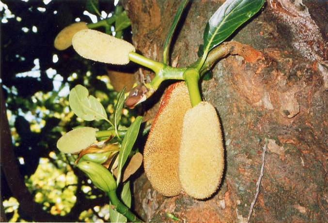
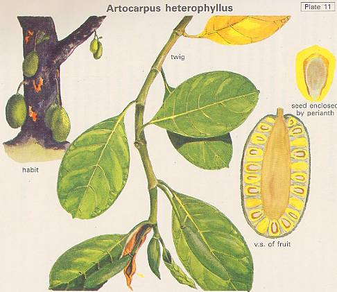
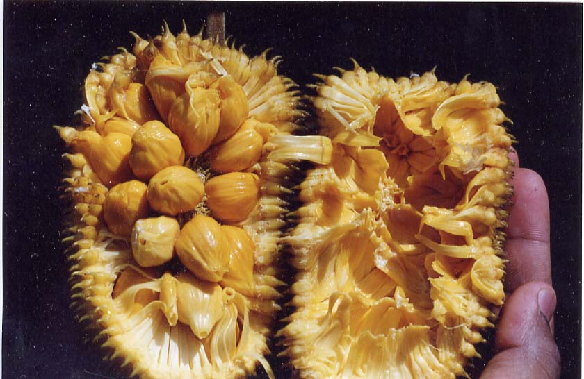

|
ECONOMICALLY
IMPORTANT PLANTS OF INDIA |
| Under-utilized Food and Fodder species and their wild relatives | Contributed by Ms.M.L Annapurna And Dr. Dhanapal, UAS, Bangalore |
Artocarpus heterophyllus Linn.,

Correct Name
: Artocarpus heterophyllus (Linn.) Lamk.

Family : Moraceae
Synonyms : Artocarpus integera; Artocarpus
integrifolius Auct.; Artocarpus incisus; Artocarpus integra; Artocarpus
integrifolia L.f,,; Artocarpus integrifolius;
Common Names : Jack tree
English: Jack fruit, Jack, Jack tree, Jack-fruit tree, Jack-fruit
Hindi and Punj: Kathal, Cakki, Jack-tree, Jackfruit tree, Kanthal
Oriya and Telugu: Panasa
Bengali: Kanthal, Kathal
Malayalam: Chakka, Pilavoo, Pilavu, ,Plavu
Mraathi: Phanas, Phanasi,Phannas
Tamil: Pala pazham, Palamaram, Pilapalam
Telugu:Panas,Panasa,
Kannada: Halasu

DIAGNOSTIC FEATURES
The trees attain very huge proportions, and ooze thick milky latex
from cut surfaces. The inflorescences are borne on the trunk and old branches,
from which the huge fruits hang down when formed (Artocarpus heterophyllus1).
The barrel shaped 'fruits', composed of numerous small fruits formed of the
whole inflorescence, may measure up to 90 cm and weigh over 30 kg. The fruits,
fleshy and juicy with a characteristic flavour when ripe, are enclosed in a
thick rind with a tough exterior. Artocarpus integer is a large tree with a
dense crown, reaching a height of 15 m or more; the cylindrical stem is rounded
at the ends; bark grey-brown to dark brown with warty excrescences; blaze pale
pink to yellow, exuding a copious milky latex when cut.
REPRODUCTIVE BIOLOGY
Jackfruit is monoecious, with male and
female inflorescences appearing separately on the same tree.
During flowering, specialized laterals develop on the trunk or main branches
(cauliflory), which are 46.0 ± 8.0 cm in length, initiating 6.6 ±
0.5 leaves, and 2.2 ± 0.6 inflorescences. Female inflorescences occur
only on these laterals whereas the males may occur also in the terminal leaf
axil or leader and lateral shoots. There appears to be no regular sequence in
the incidence of the male and female inflorescences, although there are considerably
more males than females Each terminal is enclosed by a pair of thick stipules
which protect the bud initially but leave a prominent annular scar on the node.
The stipules enclose curled leafprimordia and vegetative or reproductive apices.
Whereas male and female inflorescences are similar during early development,
the female is later distinguished by a thicker peduncle and a large annular
disc at the base of the spike. The female is noticeably shorter and wider than
early-emerged males at anthesis, but later-emerged males are smaller. The light
green female inflorescence is 5-8 cm by 3-5 cm at anthesis. The stigmatic surface
is composed of papillae, which become sticky when receptive 1-2 weeks after
exsertion; this condition may last for a farther 2 weeks. A few interfloral
bracts may be but are usually shed soon after anthesis. Prior to anthesis, the
perianth segments remain free, though tightly packed. Later, they enlarge in
the centre and fuse but remain free at the lower and upper regions. The lower
region containing the seed is fleshy and edible, while the other two regions
constitute the outer protective rind. As it grows and becomes heavier, the fruit
becomes pendulous. The male inflorescence is oblong and light green and grows
to a length of 5-10 cm by 2-4 cm. It is densely covered with minute flowers,
each with a 2-lobed calyx and asingle stamen. Each stamen consists of four anthers
which split open at anthes is,exposing the masses of spherical pollen grains.
Prior to anthesis the surface appears armoured, with spikes and scales which
split as the stamen exserts. The male perianth segments are shorter than the
female, and though tightly packed are always free Anthesis commences 2-3 weeks
after emergence from the stipules and lasts about 2 weeks during which inflorescence
appears yellow. Pollen production is abundant and ranged from 1,50,00,000 to
1,70,00,000 per catkin. The percentage of pollen fertility ranged from 89 to
93 and the pollen diameter ranged from 16 to 22.
Breeding System
:
Jackfruit is monoecious and cross pollinated plant with male and female inflorescences
appearing separately on the same tree.
Breeding and improvement:
The Jackfruit is regarded as a minor fruit and it is seldom found in regular
plantations. In spite of its high nutritive values, a wide range of preserves
and utility of timber and foliage, the tree is a neglected one. The following
measures are suggested for improvement of this potential fruit crop.
Selection of clones:
The most important means is to exploit the wide variation among different types
grown Trees of outstanding merits are to be selected after a thorough survey
in the growing region. The selected trees should bear large number of fruits
of small to medium size . Big size of fruit should be avoided. Fruits should
contain larger quantities of pulp with smaller seeds and thinner skin. Selected
clones should be propagated vegetatively and a mother orchard has to be established
for preparing planting materials.
Breeding:
Since a wide range of variation is available in every growing region, it is
worthwhile to attempt a breeding programme after selecting the desirable parent
trees. An effort to combine deserable characteristics ofjackfruit cultivars,
a breeding programme was initiated in 1998 at Fairchild Tropical Garden at Miami
Florida Using hand pollination of 12 cultivars of the germplasm collection in
the garden [Black Gold, Cheena (a natural hybrid between jackfruit and A. integer)
Cochin Fans Rasimi, Galaxy, Golden Nugget, Honey Gold, J-30, J-31 Lemon Gold,
NSI Taboney] selected crosses of Jackfruit cultivars were made using cultivars
as both male and female parents but no self pollination. Seedlings of each cross
were planted and their growth and performance evaluated (Wasielewsski etal.,
2000).
Biotechnology:
Micropropagation of Jackfruit has proved successful. Investigations on other
aspects oi- biotechnology arc very scanty.
Embryo culture:
There are some reports on the embryo culture ofjackfruit. Chin et al (1988)
excised embryos of the recalcitrant Artocarpus spp. to determine suitable media
and cultural conditions for their development into whole plants. MS medium modified
by the addi- tion of 0.17 g NaH^PO/1 was found to be a suitable basal medium.
The basal medium supplemented with 2 g/1 activated charcoal and 1.0 mg/1 NAA
or IAA in combination with 1 mg/1 kmetin, BA or 2iP was found to be suitable
where the embryos developed normally to form whole plants.
Molecular markers:
There is only one report available on the use of molecular markers. Kanzaki
et al (1997) estimated the phvlogenetic relationship among 11 Artocarpus species,
including 2 economically important species, the jackfruit ( A. heterophyllus)
and the breadfruit ( A. altilis ), by comparing 30 restriction-site mutation
in an amplified region of chloroplast DNA (cpDNA). The jackfruit and chempedak
(A. integer) were monomorphic and therefore indistinguishable for all restriction
sites. This confirmed the close relationship between these 2 species. Breadfruits
and A. elasticus formed a monophyletic group, indicating the possibility that
breadfruits were derived from A. elasticus or its close relatives. In general,
these results were in agreement with the conventional classifications in Artocarpus
species except for the position of chaplasha.
Floral biology:
The distribution of sex on the jackfruit tree is interesting. On a 16-year-old
tree about 2,200 spikes appeared of which 96 per cent were males (Samaddar and
Yadav, 1982). Sahadevan et al. (1950) recorded 3 to 40 per cent female spikes
while Srivastava (1961) reported 20 per cent. The footstalks carrying female
spikes appear on the trunk and main branches adventitiously in the central region
of the tree. Male spikes appear both in the central and peripheral regions.
Sex of a spike can be easily identified when it is small. The length and diameter
of female spike are much more than those of the males. Surface of a young male
spike is smooth while in the case of a female flower it is granular. A single
male flower is actually a stamen enclosed in a green leathery tubular perianth.
During anthesis, the stamens protrude out of the perianth tube and appear on
the surface of the spike.
Phenology
The tree starts bearing from the seventh or eighth year after planting. The
flowers generally start appearing in December and the tree is monoecious. Large
number of flowers are borne on club-shaped rachis.The inflorescence is a spike
covered by two spathes. The female spikes are borne on foot-stalks while the
male spikes appear both on the footstalks as well as on the termi-nal branchlets.
Footstalks bearing female spikes are much more vigorous than thosearrying only
the male or both male and female spikes. Sambamurthi and Ramalingam (1954) noted
that footstalks measuring more man 6.5 cm in circumference at the base seemed
to produce female spikes only and that the spikes appearing at the beginning
and at the end of flowering season were mostly males.
Pollinators:
The jackfruit is anemophilous. Under open pollination the fruit set is about
7, per cent which is improved by hand pollination. Pollination and fertilization
of a spike are complete within 3-6 days after anthesis.
Seed Biology :Recalcitrant seeds with good
germination.
Seed Germination :
The most common method of propagation of jackfruit is by seed. Generally, 4-5
seeds are planted in situ so that the taproot can grow undisturbed. However,
seedlings can be raised in pots or poly bags. After one or two years the seedlings
are planted at site. Germination of seeds deteriorates in storage. Seventy per
cent of the seeds germinate within 15 days after extraction. But, after 30 days'
storage, the germination declined to 40 per cent (Anon., 1967). Hayes (1953)
opined that larger seeds germinate better. Soaking of seeds in water for 24
hours has been found to improve the germination (Singh, 1969). Krishnasamy (1990)
suggested that the critical seed moisture content in a cultivar was 39%, at
which moisture content approximately 93% of seed germi- nated. Freshly extracted
seed had a moisture content of 62% and 100% germination Sinha and Sinha (1968)
obtained 76.7 per cent germination by soaking in 25 ppm NAA for 24 hours compared
with 60 per cent with 50 ppm NAA and 50 per cent under control. Prakash (1998)
recorded maximum germination of seeds from which the outer thin leathery seed
coat was removed and soaking in water for 8 hours. Treatment of seeds with biotin
(10 ppm) and kinetin (50 ppm) resulted in a significantly highervigour index.
Seedling growth was also better when seeds were soaked in 25 ppm NAA. Sanmugavelu
(1971) obtained 100 per cent germination by soaking seeds for 4 8 hours in GA,
upto 500 ppm compared with 80 per cent under control. Seedling growth was also
better. It was also noted that IAA, IBA, NAA and CPA were less effective.
Vegetative propagation:
A number of vegetative propagation methods have
been attempted by different workers
Mukherjee and Chatterjee (1979) reported 84 per cent success in rooting of cuttings
by etiolation and forcing of shoots followed by treatment with 5000 ppm IBA,
and then keeping under a mist. No rooting was obtained without dipping in IBA.
Survival of cuttings was 50-70 per cent. Dhua,etal. (1983) recorded maximum
rooting success (90%) from shoots which were etiolated and ringed for 30 days
and then treated with IBA at 3000 ppm in combination with ferulic acid at 2000
ppm. Pre-conditioning (especially etiolation) or stock plant treatment with
ethephon before taking cutting arid treating the cuttings with IBA (5000 ppm)
and p-hydroxybenzoic acid (200 ppm) at the time of planting was found effective
in inducing rooting of semi-hardwood cuttings (Mitra and Bose, 1996).
Layering:
1) Air-layering:
Sen and Bose (1959) reported 100 per cent success in rooting of air-layers.
Treatment with IBA markedly improved the root formation. Pre-treatments of shoots
like gird ling, etiolation and treatment with IBA and NAA were found more effective
in rooting of layers when applied in combination rather than when applied individually
Lingarajappa, 1982). Nazzem et al. (1984) recorded air-layers
of one-year old shoots of bearing plants when coconut pith was used as rooting
medium. Datta (1988) recorded 100 per cent rooting by pre-treatment of stock
plants with ethrel (250 ppm) or cycocel (1000 ppm) and application of IBA at
3000 or 5000 ppm. Alila etal. (2000) concluded that the treatment with IBA (5000
ppm) could be used for adventitious root formation in air-layering ofjackfruit
in combination with etiolation for a period of 30 days.
2) Mound layering:
Alila et al. (1997) reported that medium sized stool
resulted into more number of
bud emergence. IBA at all (500, 1500, 3000 and 4500 ppm) but preferably lower
concentration proved better than NAA (250, 500,, 750 and 1000 ppm) in rooting
of layered shoots. No distinct variations could be established in field survivality
of rooted shoots as compared to control.
Grafting:
1) Inarching:
Experiment on inarching conducted at the Fruit Research
Station, Tamil Nadu
revealed that by using A. hirsuta or Rudrakshi as rootstocks, jackfruit could
be inar-ched with 60 to 70 per cent success (Naik, 1952). Effect of different
pretreatments of scions on success of grafting was investigated by Maiti and
Sen (1999). They observed maximum success (60%) by ringing and blanching of
scions for 3 days before grafting.
2) Epicotyl grafting:
Epicotyl grafting with mature, plump, terminal scion shoot on germinating jackfruit seedling of about 8 to 10 days by wedge method during April-May gave 50 to 90 per cent success and the successful epicotyl grafts attained saleable size within a year (Gunwale etal., 1982). In the experiment on grafting of jackfruit, Jose and Velsalakumari (1991) reported highest percentage of sprouting (83.30%) and survival (61.67%) for grafting done during June. Epicotyl grafting with 3- to 4-month-old scions and 5-day- old rootstocks resulted in the highest percentage sprouting (29.50%) and the highest percentage survival (21.67%). Moist conditions increased the percentage of success in both kinds of grafts.
Budding:
Several methods of budding, tried at different research stations have proved successful.
1) Forkert budding : Modified forkert budding was found very successful in Java (Naik 1952).
2) Chip budding : Success was 41 per cent by chip budding at the Horticultural Research Station, Krishnagar (Samaddar and Yadav, 1970).
3)Patch budding : Teaotia etal. (1963) reported 100 per cent success by patch budding. Patch, chip and T methods of budding were tried during February to September by Singh et al. (1982). The maximum success (90 per cent) was obtained following patch method in June and T budding was found least successful (Table 2). In experiments with patch bud grafts, retaining all or some of the leaves on the root stock at grafting had no effect on graft take survival. tying with single polyethylene strips was recommended as the most economical method (Kelaskar et al., 1991) the grafts became ready for planting one or two years after grafting.
Micropropagation:
In jackfruit, new plantlets were successfully raised
from nodal explants and shoot
apices cultured on MS medium supplemented with various concentrations ofcytokinin
for shoot proliferation and subcultured on similar medium supplemented with
different concentrations of auxin for root regeneration (Rajmohan and Mohanakumaran,
1988a,b; Roy et a!., 1990).
Micropropagation of jackfruit was also successful
by using terminal and axillary buds of 40-year-old trees on supplemented MS
medium (Royetal., 1991). Royetal. (1993) propagated successfully the flood tolerant
type of jackfruit by using shoot buds as explants. They obtained highest number
of shoot buds by using MS medium containing 8.88 uM BA and 2.68 uM NAA. These
shoots were found to proliferate through 7 or more subcultures with an average
of 10 shoots per transfer. For shoot multiplication, the concentration ofBA
and NAA were lowered to 4.44 and 0.54 uM respectively and coconut milk (10%)
was added. Well developed shoots were then excised and implanted individually
on a rooting medium consisting of half-strength MS salts supplemented with 5.37
uM NAA and 4.92 uM IBA. Eighty per cent of the shoots produced roots, and the
rooted plantlets were transplanted directly from the culture tube to earthen
pots containing sterile sand, soil and humus (1:2:1) and covered with transparent
plastic bags. After acclimatization the seedlings were flooded with water for
30 days and 75% of these plants survived. Shoot-tips and nodal segments collected
from coppiced shoots on the main trunk of a new jackfruit cultivar bearing fruits
twice a year exhibited maximum proliferation on MS medium containing 2.5 mg
BA + 0.5 mgNAA/1 after 28 days. The shoots were then subcultured for several
times. The number of shoots increased to 40 when the concentration of BA and
NAA were lowered to 1.25 and 0.25 mg/1, respectively and 15% (v/v) coconut milk
was added to the medium. Rooting of excised shoots was achieved on half-strength
MS medium containing NAA and IBA each at 1.0 mg/1. The rooted plantlets were
transplanted directly from the tube to pots containing sterile sand, soil and
humus
(1:2:1) and covered with transparent polythene-bags. Seventyfive per cent of
the seedlings survived after transplanting into the open field (Roy and Roy,
1996). Singh and Tiwari (1996, 1998) used nodal explants of mature trees on
modified MS medium supplemented with 18.0 mg BA/1 + 0.2 mg IBA/1. The effects
of carbon source, type of culture vessel, gelling agents and gibberellic acid
on shoot proliferation were studied in jack fruits cv. Singapore (Adiga etal.,
1998). Cultures supplemented with sucrose or sugar at 3 or 4% produced more
shoots than those supplemented with sucrose or sugar at 1%. Gibberellic acid
(6 mg/1) promoted shoot length. were established on MS medium with 5- to 10-mm-long
explants dissected from terminal buds of new growth from the trunk. After initial
culture of bud explants, 1- to 2-node pieces were taken from the microshoots
formed and used to proliferate further axillary shoots from multiplying and
maintaining shoot cultures. Benzyladenine and kinetin (4.5-9.0 aM), either separately
or together, supported shoot proliferation.
Cultivation:
Commonly, the square system is followed for planting.
A hexagonal system is also followed in less fertile soil. A spacing of 12 x
12 m is followed in fertile soil. How ever high density planting is followed
in high fertile soil. However high density planting is practiced in heavy soil.
Since the jack fruit is an ever green tree bearing on the mature wood of trunk
and branches, hence no regular training and pruning are is practiced , except
for removing dead and diseased parts.
The Jack fruit is mostly grown as rainfed crop. Hence regular irrigation is seldom needed. If grafts are planted , they are hand watered during winter and summer for for the first two years. For quick growth of trees , manures and fertilisers may be added twice a year before and after the rainy season It is advisable to apply 80 Kg of FYM per tree per year.
Jack fruit is not grown in an orchard, hence no
regular intercultural operations are practiced. Hiowever it is necessary to
weed out the areas under canopy. If planted in regular layouts , it would be
advisable to grow an intercrop such as Stylosanthus hamata or fodder
shrubs like Sesbanis grandiflora and Subabul (Luecaena)..
MAJOR PESTS & DISEASES Uses:
Harvesting Practices: Produce and Products:
Diseases:
Fruit rot caused by Rhizopus artocarpi is the most common disease of
Jackfruit in India. The disease causes premature fall of young fruits due to
rotting and may result in heavy loss in yield under unusually humid conditions.
Spraying of dithane M-45 (0.2%) and bavistin (0.05%) at 15 days interval during
fruit growth was found effective in controlling fruit rot (Gupta and Pandey,
1985). Botrytis cinerea and Rhizopus stolonifer were also found to cause premature
drop of young fruits. This could be controlled by two applications of 0.04 per
cent of benomyl at an interval of 15 days; Pink disease,
stem rot, male inflorescence rot and soft rot are occasionally noticed in Jackfruit.
However, these diseases are not serious maladies and can be controlled by pruning
the affected parts and using Bordeaux paste at the cut-ends.
Pests:
Although a number of pests are known to attack jackfruit, the most important
ones are described below:
Shoot and trunk borer
It is often serious in Assam, Uttar Pradesh and Bihar. It bores into the tender
shoots and buds. The affected parts should be nipped off and destroyed. Application
of carbaryl (Sevin) 50 per cent at the rate of 4g per liter of water by spray
in flowering season is advisable. The brown weevil (Ochyromera artocarpi) is
also reported to bore into the tender buds and shoots. They may be controlled
by destroying fallen fruits and buds and by collecting grubs and adults. In
addition, mealy bug and jack scales are also found to attack Jackfruit which
can be controlled by use of a suitable contact insecticide.
Economic
Potential and Uses
Parts used:
Tender fruit as a vegetable, Ripe fruit Bulbs, and seeds, Timber and Latex,
leaves.
The seeds are boiled or roasted and used in many culinary preparations. The
seeds are very rich in carbohydrate and protein.
A systematic study of proximate composition and functional properties of-jackfruit
seed revealed it to be a good source of protein having high solubility near
neutral pH. It has low water and fat absorption capacities. Incorporation of
jack seed to deep fat fried products revealed that it brings down fat absorption
to a remarkable extent with affecting sensory attributes of savoury product
(Rajarajeshwari and Prakash, 1999).
Jacalin, the major protein from the jackfruit seeds, is a tetrameric two-chain
lectin (MW 65 kDa) combining a heavy a-chain of 133 amino acid residues with
a light P-chain of 20-21 amino acid residues. Even in its sialylated form, it
is highly specific for the a-o-glycoside of the disaccharide Thomsen-Friedenreich
antigen (Galbeta l-3Ga 1 NAc). Because of the properties, jacalin is suitable
for studying O-linked glycoproteins, particularly human IgAl. Jacalin is strongly
mitogenic for human CD4+T lymphocytes, and it has proved useful for the evaluation
of the immune status of patients infected with human immuno-deficiency virus-1.
Tender Jack fruits are harvested for use as vegetable during early spring and
summer until the seeds harden. The fruit matures towards the end of summer in
June. Period of fruit development is February to June. The optimum stage of
harvest maturity of jack-fruit has been reported to be 90-110 days after the
appearance of the spike. Harvesting is done by cutting off the foot
stalks carrying the fruits.
Storage:
Jackfruit is not normally stored in cold storage. A storage life of about 6
weeks expected when the temperature is 11.1-12.8°C and humidity between
85 and 90 percent.
Yeild:
Bearing starts from the seventh to eighth year when a few fruits may develop.
The tree reaches its peak bearing stage within fifteen to sixteen years after
planting. Yield is not similar every year. Normally, a tree bears a few to about
250 fruits annually at this stage. The weight of fruits varies widely depending
on the type. Individual Jackfruit weigh from about 1 kg to about 20 kg.
Timber will be made out of the main stem.
From the raw fruit, Jack pickle, Vinegar pickle, Spiced vinegar pickle and Jack
fruit chips will be made.
From the ripen fruit, Dehydrated jack fruit, Jack papad, Jack Squash, Canned
jack Slices and Jack seed flour will be prepared.
Chemistry:
Ripe fruit has high nutritive value. The fruits are normally-fibrous and are
composed of mono-, di-, and polysaccharides (Berry and Kaira, 1987). Zaghlol
etal. (1983) noted glucose (10.94%), fructose (1.42%), xylose (0.18%), rharnnose
(0.44%). arabinose (1.51%), galactose (2.47%), and three other unknown sugars
(13.4%), in ripe jackfruits. Jackfruit is an important source of pectin (Krishnamurthi
and Giri, 1949) and contains about 1.9 percent protein on fresh weight basis.
Hossain et al. (1979) stated that the fruit contained 2.64 - 11.77 mg of ascorbic
acid/100 g and 250-1740 mg carotene/100 g. The jackfruit latex is reported to
possess bacteriolytic activity.
Jackfruit tender: Moisture-84.(g); protein-2.6.(g); fat-0.3.(g); minerals-0.9,(g);fiber-2.8
(g); carbohydrates-9.4 (g); Enrgy-91 K.cal-30 (mg); phosphorous-40 (mg); iron-1.7
(mg); vit c-14 (mg).
Seed: Moisture-64.5(g); protein-6.6(g); fat-0.4(g); minerals-1.2(g);fiber-1.5
(g); carbohydrates-25.8 (g); Enrgy-133 Kcal: Calcium-50(mg); phosphorous-97
(mg); iron-1.5 (mg). choline-52(mg).
Minerals: Mg -54 mg/100gm, Na -63.2 mg, K - 246 mg, Cu - 0.19 mg, S- 356 mg and Cl- 14 mg.
Processing Techniques :
The nature of Jack Fruit in addition to short shell life even under refrigerated conditions necessiate processing of the ripe fruit.It has been reported by CFTRI,Mysore that high cless frozen and dried products such as Nector,Preserves and other confections can be prepared from the ripe fruits.Green Jack fruit is utilized for making pickle,canned and curied vegetables.The Waste (the skin peel and cores) which constitutes about 45% of the total fruit weight have been found to be fairly good source of pectin.
Make fully matured fruit paste for preparation of Papad after drying, Sliced and deep fat fried.
Other Uses :